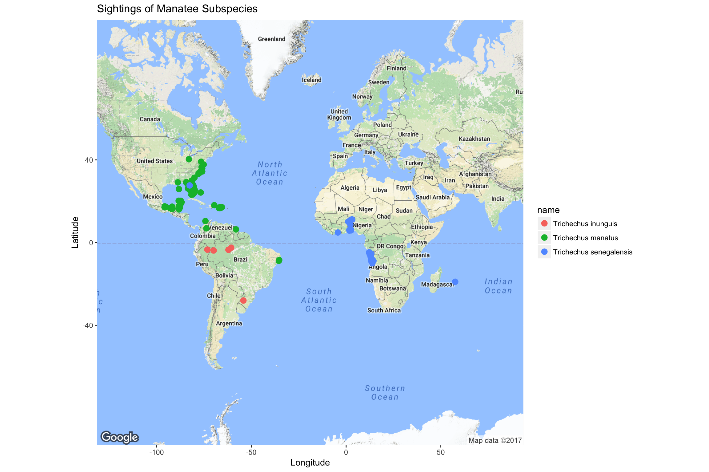

Manatees, using rOpenSci
Background
I was born and raised in Southwest Florida, as a fourth-generation Floridian, and was lucky to have an amazing environmental education. After years of obsession with Florida’s poster mammal, I had the opportunity to visit Crystal River and Homosassa Springs to snorkel with manatees twice while in middle school. So when I started learning the rgbif package, I decided to examine data on the mammal I’ve grown up studying.
There are three living species of manatee: Trichechus inunguis (Amazonian), Trichechus manatus (West Indian), and Trichechus senegalensis (West African). Not much is known about the Amazonian and West African manatees, but they are hypothesized to be similar to the West Indian species.
R Packages to Use
library(rgbif)
library(mapr)
library(spocc)
library(ggplot2)Manatee Data
splist <- c('Trichechus inunguis', 'Trichechus manatus', 'Trichechus senegalensis')
keys <- sapply(splist, function(x) name_suggest(x)$key[1], USE.NAMES=FALSE)
dat <- occ_search(taxonKey=keys, return='data', limit=300)Using map_plot
out <- occ(query = splist, from = 'gbif', has_coords = TRUE)
map_plot(out)
Using map_ggplot
map_ggplot(out) + ggtitle("Sightings of Manatee Subspecies")
Using map_ggmap
map_ggmap(out,zoom=2) + ggtitle("Sightings of Manatee Subspecies")